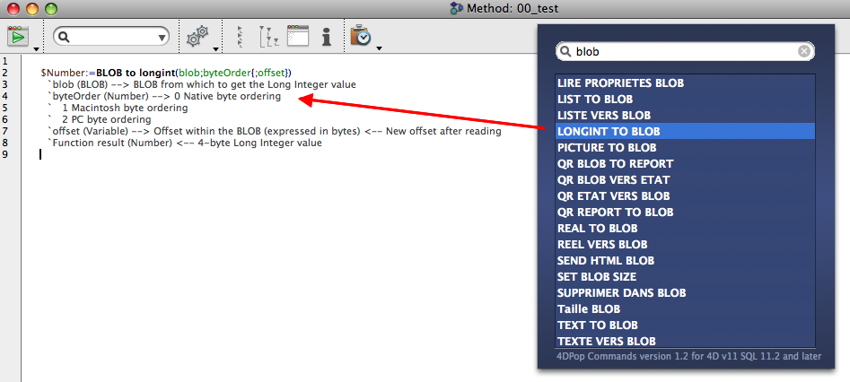

|
|
||||
|
|
||||
4DPop Commands を使用すると、英語あるいはフランス語版のコマンド名を素早く検索して、オンラインドキュメントにアクセスしたり、シンタックス付きでコマンドをメソッドエディタにペーストしたり、必要とされる引数に関する説明を表示したりできます。
| 1. | データベースのストラクチャファイル (".4db") と同階層に "Components" フォルダを作成します。 |
| 2. | "4DPop Commands.4dbase"* フォルダまたはそのエイリアスを "Components" フォルダに置きます。 "4DPop" コンポーネントを使用している場合、"4DPop Commands.4dbase" フォルダ/パッケージをパレットにドロップすると、Components フォルダにエイリアスが作成され、データベースが再起動されます。 |
| 3. | データベースを開きます。 |
| 4. | "4DPop"コンポーネントを使用している場合、"4D Commands" ツールはパレットに表示され、クリックすればツールウィンドウが表示されます。
"4DPop" コンポーネントがインストールされていない場合、ツールを開くためには "実行" メニューの "メソッド..." を選択し、"Commands" を選択して "実行"ボタンをクリックします。 |
*Macintoshでは、コンポーネントは拡張子が ".4dbase" のコンポーネントです。
利用方法 |
ツールを選択するとパレットウィンドウが表示され、コマンド名 (の一部) を入力すると、4Dコマンドのリストが表示されます。
 |
 |
ここで2つのアクションを実行できます:

ドラッグ＆ドロップ中にOption (Mac OS) / Alt (Windows) キーを押すと、ペーストされるテキストは以下のようになります:Command name (# Command).
ウィンドウの右上にある "i" ボタンをクリックすると、設定ダイアログが表示されます:
この設定は4D環境設定フォルダの "4dPop v11 preference.xml" に保存されます。 |
|
version 1.2 :
- コマンド名が英語とフランス語で表示されるようになりました。
このコンポーネントはコンパイル版で提供されますが、コンポーネントフォルダ内の"Sources" フォルダにはソースコードが含まれています。
4DPopに関するディスカッションは Forum 4DPop で提供されています。